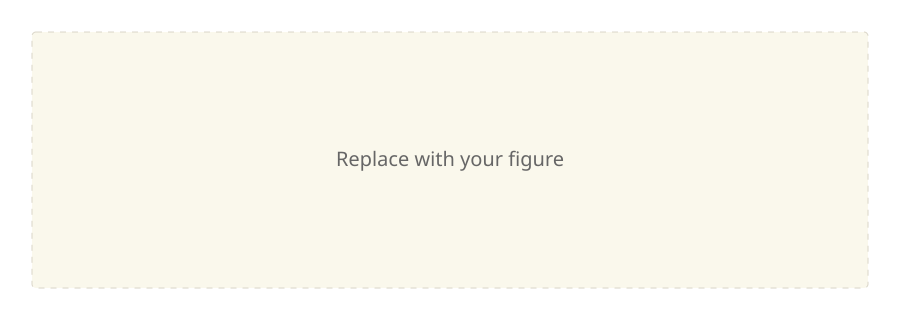

【Artifact 标题】
【简短摘要：说明主题、范围和读者需要了解的核心信息。】
2. 细节
2.1 方法
【简要说明方法。】
- 【步骤一】
- 【步骤二】
| 项目 | 说明 | 数值 |
|---|---|---|
| 【项目】 | 【说明】 | 0.00 |

# Replace this illustrative code with relevant code.
result = {"status": "ready", "value": 1}
print(result)参考来源
- 【作者、标题、日期。】【来源链接】